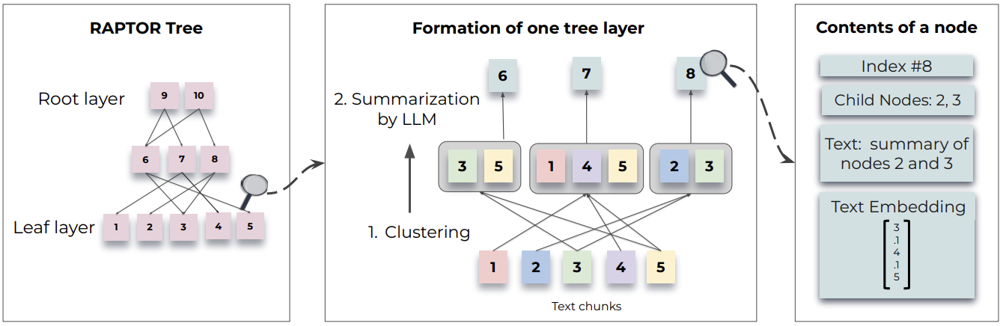

6. Indexing#
In RAG, the first thing we do is creating a vector store that stores “chunks” of the provided documents. They are stored in our vector database in a way that they can easily and efficiently be retrieved given a query. It is called indexing. In this section we will be looking at different indexing techniques fascilitated by Langchain to optimize RAG.
%load_ext dotenv
%dotenv secrets/secrets.env
6.1. Multi-representation indexing#
In multi-representation indexing, instead of chunking and embedding the whole documents, we first generate summaries of each document. Then the embeddings of the summeries will be stored in the vectorstore, while the complete documents related to those summeries through an id are stored in a seperate in-memory database (i.e., a document store). Once the user asks a question, our multi-vector retriever will first get the most similar summeries from the vector store, follwed by the corresponding documents from the document store. As a result not only the similarity search will be optimized due to the small embedding space, but also the LLM can use the entire original documents as the context (instead of chunks) to answer the question accurately.
from langchain_core.documents import Document
from langchain_community.vectorstores import Chroma
from langchain_community.document_loaders import WebBaseLoader, PyPDFLoader
from langchain.text_splitter import RecursiveCharacterTextSplitter
from langchain_core.output_parsers import StrOutputParser
from langchain_core.runnables import RunnablePassthrough
from langchain_openai import ChatOpenAI, OpenAIEmbeddings
from langchain.prompts import ChatPromptTemplate
from langchain import hub
First we create two documents to answer the user questions.
loader = WebBaseLoader("https://lilianweng.github.io/posts/2023-06-23-agent/")
docs = loader.load()
loader = WebBaseLoader("https://lilianweng.github.io/posts/2024-02-05-human-data-quality/")
docs.extend(loader.load())
Then we create a chain that generates summeries from the page contents of each document.
chain = (
{"doc": lambda x: x.page_content}
| ChatPromptTemplate.from_template("Summarize the following document:\n\n{doc}")
| ChatOpenAI(model="gpt-3.5-turbo",max_retries=0)
| StrOutputParser()
)
summaries = chain.batch(docs, {"max_concurrency": 5})
summaries[0]
'The document discusses the concept of building autonomous agents powered by Large Language Models (LLMs). It explains the key components of such agents, including Planning, Memory, and Tool Use. Several proof-of-concept examples are provided, such as AutoGPT and GPT-Engineer, showcasing the potential of LLMs in various tasks. Challenges related to finite context length, planning, and reliability of natural language interfaces are also addressed. Finally, the document includes citations and references for further reading.'
After generating summeries, we create our docstore as an InMemoryByteStore to store documents indexed using a UUID and our Chroma vectorestore to store the embeddings of the summaries converted into documents. Here, we link the summeries with documents using a UUID which is added as a metadata to each summary. Finally we create our MultiVectorRetriever with the created vectorstore, docstore, and doc_id as the link between them.
from langchain.storage import InMemoryByteStore
from langchain.retrievers.multi_vector import MultiVectorRetriever
import uuid
docstore = InMemoryByteStore() # To store the documents
vectorstore = Chroma(collection_name="summaries", embedding_function=OpenAIEmbeddings()) # To store the embeddings from the summeries of the documents
# ids that map summeries to the documents
doc_ids = [str(uuid.uuid4()) for _ in docs]
# Create documents from summeries.
summary_docs = [Document(page_content=s, metadata={"doc_id": doc_id}) for s, doc_id in zip(summaries, doc_ids)]
# Create the retriever
retriever = MultiVectorRetriever(
vectorstore=vectorstore,
byte_store=docstore,
id_key="doc_id"
)
# Add summaries to the vectorstore
retriever.vectorstore.add_documents(summary_docs)
# Add docuemnts to the docstore
retriever.docstore.mset(list(zip(doc_ids, docs)))
We can then query the vectorstore to get the relevant summary to the user query.
query = "Memory in agents"
sub_docs = vectorstore.similarity_search(query,k=1)
sub_docs[0]
Document(page_content='The document discusses the concept of building autonomous agents powered by Large Language Models (LLMs). It explains the key components of such agents, including Planning, Memory, and Tool Use. Several proof-of-concept examples are provided, such as AutoGPT and GPT-Engineer, showcasing the potential of LLMs in various tasks. Challenges related to finite context length, planning, and reliability of natural language interfaces are also addressed. Finally, the document includes citations and references for further reading.', metadata={'doc_id': '997d7f6e-3911-49e8-b23f-3dca97361902'})
Also, we can directly get the document related to the user query, which can be used to provide as the context to the LLM to answer the user question.
Warning
You have to make sure that the LLM has enough context length to fit the entire document and the question.
retrieved_docs = retriever.invoke(query)
len(retrieved_docs[0].page_content)
Number of requested results 4 is greater than number of elements in index 2, updating n_results = 2
43902
6.2. RAPTOR (Recursive Abstractive Processing for Tree-Organized Retrieval)#
Even though the multi-representation indexing allows us to index large documents and retrieve them as the context, providing the whole raw document to the LLM will be costly as well as slow. Furthermore, if multiple documents are needed to answer the user question, it is difficult to do with multi-representation indexing. Therefore, as a solution RAPTOR was introduced, which uses hierarchical indexing to recursively embedd, cluster, and summarize chunks of text, constructing a tree with differing levels of summarization from the bottom up.
In that tree, leaf nodes would be chunk of texts (according to the paper) or full documents in this case. Then RAPTOR embed the leaf nodes and cluster them. Each cluster is summerized into higher level (more abstract) consolidations of information across similar documents. This process is done recursivly, until only one cluster is left.
Let’s see how it can be implemented using Langchain!
6.2.1. Loading the documents#
First we create 2 documents from 2 papers and combine them. Also we initialize the LLM and the embedding model.
lora_doc = PyPDFLoader("data/LORA.pdf")
docs = lora_doc.load()
qlora_doc = PyPDFLoader("data/QLORA.pdf")
docs.extend(qlora_doc.load())
sorted_docs = sorted(docs, key=lambda x: x.metadata["source"])
d_reversed = list(reversed(sorted_docs))
concatenated_content = "\n\n\n --- \n\n\n".join(
[doc.page_content for doc in d_reversed]
)
Chunk the combined documents.
chunk_size_tok = 2000
text_splitter = RecursiveCharacterTextSplitter(
chunk_size=chunk_size_tok, chunk_overlap=0
)
texts_split = text_splitter.split_text(concatenated_content)
embeddings = OpenAIEmbeddings()
llm = ChatOpenAI(model="gpt-3.5-turbo", temperature=0)
6.2.2. Tree construction#
 |
|---|
RAPTOR high-level architecture |
Once we have the set of document chinks, RAPTOR recursively cluseters and summerizes them to builds the tree bottom-up. When clustering, according to the paper, “soft-clustering” is used. It allows a data point (i.e., chunk of text) to be clustered into multiple clusters. This flexibility is essential because individual text segments often contain information relevant to various topics, thereby warranting their inclusion in multiple summaries. Therefore to achieve such a flexibility, the authors of RAPTOR used Gaussian Mixture Models (GMM).
GMM (Gaussian Mixture Model)
Model the distribution of data points across different clusters.
GMM assumes that each data point is coming from a mixture of several gaussian distributions.
The optimal number of clusters are determined by Bayesian Information Criterion (BIC).
However, GMM tends to perform poorly when the dimensionality of the embedding space is high, as distance metrics may behave poorly when used to measure similarity in high-dimensional spaces. Therefore, as a remedy, authors then used Uniform Manifold Approximation and Projection (UMAP), a dimentionality reduction technique.
UMAP (Uniform Manifold Approximation and Projection)
Supports clustering.
Reduces the dimensionality of high-dimensional data.
UMAP helps to highlight the natural grouping of data points based on their similarities
from typing import Dict, List, Optional, Tuple
import numpy as np
import pandas as pd
import umap.umap_ as umap
from langchain.prompts import ChatPromptTemplate
from langchain_core.output_parsers import StrOutputParser
from sklearn.mixture import GaussianMixture
RANDOM_SEED = 224 # Fixed seed for reproducibility
### --- Code from citations referenced above (added comments and docstrings) --- ###
def global_cluster_embeddings(
embeddings: np.ndarray,
dim: int,
n_neighbors: Optional[int] = None,
metric: str = "cosine",
) -> np.ndarray:
"""
Perform global dimensionality reduction on the embeddings using UMAP.
Parameters:
- embeddings: The input embeddings as a numpy array.
- dim: The target dimensionality for the reduced space.
- n_neighbors: Optional; the number of neighbors to consider for each point.
If not provided, it defaults to the square root of the number of embeddings.
- metric: The distance metric to use for UMAP.
Returns:
- A numpy array of the embeddings reduced to the specified dimensionality.
"""
if n_neighbors is None:
n_neighbors = int((len(embeddings) - 1) ** 0.5)
return umap.UMAP(
n_neighbors=n_neighbors, n_components=dim, metric=metric
).fit_transform(embeddings)
def local_cluster_embeddings(
embeddings: np.ndarray, dim: int, num_neighbors: int = 10, metric: str = "cosine"
) -> np.ndarray:
"""
Perform local dimensionality reduction on the embeddings using UMAP, typically after global clustering.
Parameters:
- embeddings: The input embeddings as a numpy array.
- dim: The target dimensionality for the reduced space.
- num_neighbors: The number of neighbors to consider for each point.
- metric: The distance metric to use for UMAP.
Returns:
- A numpy array of the embeddings reduced to the specified dimensionality.
"""
return umap.UMAP(
n_neighbors=num_neighbors, n_components=dim, metric=metric
).fit_transform(embeddings)
def get_optimal_clusters(
embeddings: np.ndarray, max_clusters: int = 50, random_state: int = RANDOM_SEED
) -> int:
"""
Determine the optimal number of clusters using the Bayesian Information Criterion (BIC) with a Gaussian Mixture Model.
Parameters:
- embeddings: The input embeddings as a numpy array.
- max_clusters: The maximum number of clusters to consider.
- random_state: Seed for reproducibility.
Returns:
- An integer representing the optimal number of clusters found.
"""
max_clusters = min(max_clusters, len(embeddings)) # Maximum number of clusters is limited by the number of embeddings
n_clusters = np.arange(1, max_clusters) # Range of clusters to consider (1 to max_clusters)
bics = []
for n in n_clusters:
gm = GaussianMixture(n_components=n, random_state=random_state) # For each number of clusters (i.e., number of mixture components) n, calculate gaussian mixture distribution parameters
gm.fit(embeddings)
bics.append(gm.bic(embeddings)) # Calculate the Bayesian Information Criterion (BIC) for the current number of clusters
return n_clusters[np.argmin(bics)] # Return the number of clusters that minimized the BIC
def GMM_cluster(embeddings: np.ndarray, threshold: float, random_state: int = 0):
"""
Cluster embeddings using a Gaussian Mixture Model (GMM) based on a probability threshold.
Parameters:
- embeddings: The input embeddings as a numpy array.
- threshold: The probability threshold for assigning an embedding to a cluster.
- random_state: Seed for reproducibility.
Returns:
- A tuple containing the cluster labels and the number of clusters determined.
"""
n_clusters = get_optimal_clusters(embeddings) # Determine the optimal number of clusters using BIC
gm = GaussianMixture(n_components=n_clusters, random_state=random_state)
gm.fit(embeddings) # Fit the Gaussian mixture distribution with parameters related to the optimal number of clusters to the embeddings
probs = gm.predict_proba(embeddings) # Calculate the probabilities of each embedding belonging to each cluster
labels = [np.where(prob > threshold)[0] for prob in probs] # Assign embeddings to clusters based on the threshold
return labels, n_clusters
def perform_clustering(
embeddings: np.ndarray,
dim: int,
threshold: float,
) -> List[np.ndarray]:
"""
Perform clustering on the embeddings by first reducing their dimensionality globally, then clustering
using a Gaussian Mixture Model, and finally performing local clustering within each global cluster.
Parameters:
- embeddings: The input embeddings as a numpy array.
- dim: The target dimensionality for UMAP reduction.
- threshold: The probability threshold for assigning an embedding to a cluster in GMM.
Returns:
- A list of numpy arrays, where each array contains the cluster IDs for each embedding.
"""
if len(embeddings) <= dim + 1:
# Avoid clustering when there's insufficient data
return [np.array([0]) for _ in range(len(embeddings))]
# Global dimensionality reduction
reduced_embeddings_global = global_cluster_embeddings(embeddings, dim)
# Global clustering
global_clusters, n_global_clusters = GMM_cluster(
reduced_embeddings_global, threshold
)
all_local_clusters = [np.array([]) for _ in range(len(embeddings))]
total_clusters = 0
# Iterate through each global cluster to perform local clustering
for i in range(n_global_clusters):
# Extract embeddings belonging to the current global cluster
global_cluster_embeddings_ = embeddings[
np.array([i in gc for gc in global_clusters])
]
if len(global_cluster_embeddings_) == 0:
continue
if len(global_cluster_embeddings_) <= dim + 1:
# Handle small clusters with direct assignment
local_clusters = [np.array([0]) for _ in global_cluster_embeddings_]
n_local_clusters = 1
else:
# Local dimensionality reduction and clustering
reduced_embeddings_local = local_cluster_embeddings(
global_cluster_embeddings_, dim
)
local_clusters, n_local_clusters = GMM_cluster(
reduced_embeddings_local, threshold
)
# Assign local cluster IDs, adjusting for total clusters already processed
for j in range(n_local_clusters):
local_cluster_embeddings_ = global_cluster_embeddings_[
np.array([j in lc for lc in local_clusters])
]
indices = np.where(
(embeddings == local_cluster_embeddings_[:, None]).all(-1)
)[1]
for idx in indices:
all_local_clusters[idx] = np.append(
all_local_clusters[idx], j + total_clusters
)
total_clusters += n_local_clusters
return all_local_clusters
def embed(texts):
"""
Generate embeddings for a list of text documents.
This function assumes the existence of an `embd` object with a method `embed_documents`
that takes a list of texts and returns their embeddings.
Parameters:
- texts: List[str], a list of text documents to be embedded.
Returns:
- numpy.ndarray: An array of embeddings for the given text documents.
"""
text_embeddings = embeddings.embed_documents(texts)
text_embeddings_np = np.array(text_embeddings)
return text_embeddings_np
def embed_cluster_texts(texts):
"""
Embeds a list of texts and clusters them, returning a DataFrame with texts, their embeddings, and cluster labels.
This function combines embedding generation and clustering into a single step. It assumes the existence
of a previously defined `perform_clustering` function that performs clustering on the embeddings.
Parameters:
- texts: List[str], a list of text documents to be processed.
Returns:
- pandas.DataFrame: A DataFrame containing the original texts, their embeddings, and the assigned cluster labels.
"""
text_embeddings_np = embed(texts) # Generate embeddings
cluster_labels = perform_clustering(
text_embeddings_np, 10, 0.1
) # Perform clustering on the embeddings
df = pd.DataFrame() # Initialize a DataFrame to store the results
df["text"] = texts # Store original texts
df["embd"] = list(text_embeddings_np) # Store embeddings as a list in the DataFrame
df["cluster"] = cluster_labels # Store cluster labels
return df
def fmt_txt(df: pd.DataFrame) -> str:
"""
Formats the text documents in a DataFrame into a single string.
Parameters:
- df: DataFrame containing the 'text' column with text documents to format.
Returns:
- A single string where all text documents are joined by a specific delimiter.
"""
unique_txt = df["text"].tolist()
return "--- --- \n --- --- ".join(unique_txt)
def embed_cluster_summarize_texts(
texts: List[str], level: int
) -> Tuple[pd.DataFrame, pd.DataFrame]:
"""
Embeds, clusters, and summarizes a list of texts. This function first generates embeddings for the texts,
clusters them based on similarity, expands the cluster assignments for easier processing, and then summarizes
the content within each cluster.
Parameters:
- texts: A list of text documents to be processed.
- level: An integer parameter that could define the depth or detail of processing.
Returns:
- Tuple containing two DataFrames:
1. The first DataFrame (`df_clusters`) includes the original texts, their embeddings, and cluster assignments.
2. The second DataFrame (`df_summary`) contains summaries for each cluster, the specified level of detail,
and the cluster identifiers.
"""
# Embed and cluster the texts, resulting in a DataFrame with 'text', 'embd', and 'cluster' columns
df_clusters = embed_cluster_texts(texts)
# Prepare to expand the DataFrame for easier manipulation of clusters
expanded_list = []
# Expand DataFrame entries to document-cluster pairings for straightforward processing
for index, row in df_clusters.iterrows():
for cluster in row["cluster"]:
expanded_list.append(
{"text": row["text"], "embd": row["embd"], "cluster": cluster}
)
# Create a new DataFrame from the expanded list
expanded_df = pd.DataFrame(expanded_list)
# Retrieve unique cluster identifiers for processing
all_clusters = expanded_df["cluster"].unique()
print(f"--Generated {len(all_clusters)} clusters--")
# Summarization
template = """Here is a sub-set of LangChain Expression Language doc.
LangChain Expression Language provides a way to compose chain in LangChain.
Give a detailed summary of the documentation provided.
Documentation:
{context}
"""
prompt = ChatPromptTemplate.from_template(template)
chain = prompt | llm | StrOutputParser()
# Format text within each cluster for summarization
summaries = []
for i in all_clusters:
df_cluster = expanded_df[expanded_df["cluster"] == i]
formatted_txt = fmt_txt(df_cluster)
summaries.append(chain.invoke({"context": formatted_txt}))
# Create a DataFrame to store summaries with their corresponding cluster and level
df_summary = pd.DataFrame(
{
"summaries": summaries,
"level": [level] * len(summaries),
"cluster": list(all_clusters),
}
)
return df_clusters, df_summary
def recursive_embed_cluster_summarize(
texts: List[str], level: int = 1, n_levels: int = 3
) -> Dict[int, Tuple[pd.DataFrame, pd.DataFrame]]:
"""
Recursively embeds, clusters, and summarizes texts up to a specified level or until
the number of unique clusters becomes 1, storing the results at each level.
Parameters:
- texts: List[str], texts to be processed.
- level: int, current recursion level (starts at 1).
- n_levels: int, maximum depth of recursion.
Returns:
- Dict[int, Tuple[pd.DataFrame, pd.DataFrame]], a dictionary where keys are the recursion
levels and values are tuples containing the clusters DataFrame and summaries DataFrame at that level.
"""
results = {} # Dictionary to store results at each level
# Perform embedding, clustering, and summarization for the current level
df_clusters, df_summary = embed_cluster_summarize_texts(texts, level)
# Store the results of the current level
results[level] = (df_clusters, df_summary)
# Determine if further recursion is possible and meaningful
unique_clusters = df_summary["cluster"].nunique()
if level < n_levels and unique_clusters > 1:
# Use summaries as the input texts for the next level of recursion
new_texts = df_summary["summaries"].tolist()
next_level_results = recursive_embed_cluster_summarize(
new_texts, level + 1, n_levels
)
# Merge the results from the next level into the current results dictionary
results.update(next_level_results)
return results
/Users/sakunaharinda/Documents/Repositories/ragatouille/venv/lib/python3.12/site-packages/tqdm/auto.py:21: TqdmWarning: IProgress not found. Please update jupyter and ipywidgets. See https://ipywidgets.readthedocs.io/en/stable/user_install.html
from .autonotebook import tqdm as notebook_tqdm
Note
The above implementation is adopted from a Langchain cookbook.
leaf_texts = [d.page_content for d in docs]
results = recursive_embed_cluster_summarize(leaf_texts, level=1, n_levels=3)
--Generated 8 clusters--
--Generated 1 clusters--
all_texts = leaf_texts.copy()
# Iterate through the results to extract summaries from each level and add them to all_texts
for level in sorted(results.keys()):
# Extract summaries from the current level's DataFrame
summaries = results[level][1]["summaries"].tolist()
# Extend all_texts with the summaries from the current level
all_texts.extend(summaries)
# Now, use all_texts to build the vectorstore with Chroma
vectorstore = Chroma.from_texts(texts=all_texts, embedding=embeddings)
retriever = vectorstore.as_retriever()
prompt = hub.pull("rlm/rag-prompt")
# Post-processing
def format_docs(docs):
return "\n\n".join(doc.page_content for doc in docs)
# Chain
rag_chain = (
{"context": retriever | format_docs, "question": RunnablePassthrough()}
| prompt
| llm
| StrOutputParser()
)
# Question
rag_chain.invoke("What is the difference between QLoRA and LoRA?")
'QLORA improves over LoRA by quantizing the transformer model to 4-bit precision and using paged optimizers to handle memory spikes. LoRA finetuning reduces memory requirements by using a small set of trainable parameters, while QLORA can match the performance of full 16-bit finetuning. QLORA with NormalFloat data type can replicate the performance of 16-bit methods across various tasks and datasets.'
The LangSmith trace will look like this.
In this section, we saw different ways of chunking the input documents and indexing them in addition to our default chunking and indexing done in previous sections with RecursiveCharacterTextSplitter. After indexing the next step would be to retrieve the indexed documents and use them as the context to the LLM to facilitate the generation. We will see how it can be done in different ways in the next section.